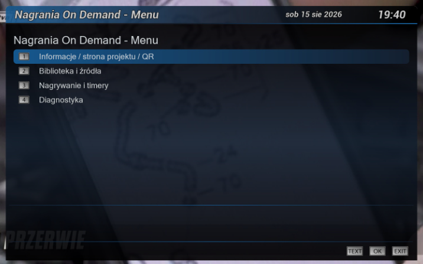
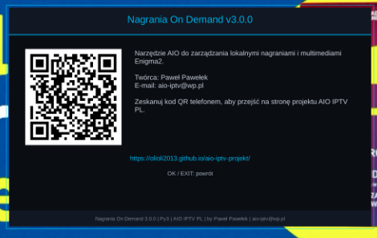

Witam na mojej stronie Paweł Pawełek
Nagrania i multimedia dla Enigma2 • duża przebudowa
Nagrania On Demand 3.0.0
Gruntownie przebudowane narzędzie do obsługi nagrań i materiałów multimedialnych na HDD, USB i innych zamontowanych nośnikach Enigma2. Wersja 3.0.0 powstała po pełnym audycie kodu, skanowania biblioteki, nagrywania, EPG, timerów, zgodności Python 2/3, wydajności i odporności na błędy.

Najważniejsze informacje
Wersja: 3.0.0
Pakiet: enigma2-plugin-extensions-nagraniaondemand_3.0.0_all.ipk
Rozmiar: 18.7 KB
Wydanie: 15.08.2026
Platforma: Enigma2 • Python 2 / Python 3
Autor: Paweł Pawełek / AIO IPTV PL
SHA-256: cdabc43b81f59778643147d946593fa94679438ee091f4853f0cc59cc844991c
Co zmienia 3.0.0?
- pełny audyt i duża przebudowa architektury wtyczki
- całkowicie nowy interfejs w stylistyce AIO Panel / IPTV Dream / NeoRadio
- nowa biblioteka nagrań z HDD, USB i innych zamontowanych nośników
- bezpieczniejsze wykrywanie duplikatów i aliasów
/hdd//media/hdd - obsługa nagrań segmentowanych i plików towarzyszących Enigma2
- bezpieczniejsze usuwanie całego zestawu plików nagrania
- przebudowana współpraca z EPG, timerami i nagrywaniem
- optymalizacja skanowania, diagnostyka i modułowa budowa
🔍 Pełny audyt techniczny
Wydanie 3.0.0 powstało po analizie struktury wtyczki, skanowania nagrań, obsługi plików i nośników, nagrywania, EPG, timerów Enigma2, zgodności z różnymi image, Python 2 / Python 3, wydajności oraz odporności na błędy. Usunięto i uporządkowano również elementy pozostałe po starszych wersjach.
🎨 Całkowicie nowy interfejs AIO
Nagrania On Demand otrzymało spójną szatę graficzną nawiązującą do AIO Panel, IPTV Dream i NeoRadio. Interfejs wykorzystuje ciemną stylistykę AIO, czytelne nagłówki, informacje o wersji i projekcie, dolną belkę funkcji oraz wygodną obsługę pilotem.
- czytelniejszy układ informacji
- ekrany dopasowane do różnych rozdzielczości GUI Enigma2
- stopka z nazwą wtyczki, Py2/Py3, AIO IPTV PL, autorem i adresem e-mail
- osobny ekran informacji o projekcie i kod QR
📺 Nowa biblioteka nagrań
Przebudowany mechanizm wyszukuje i prezentuje materiały znajdujące się na HDD, USB oraz innych zamontowanych nośnikach Enigma2.
- filtrowanie i sortowanie materiałów
- obsługa nagrań Enigma2 i zwykłych plików multimedialnych
- rozmiar, data, pełna ścieżka i informacje o wolnym miejscu
- rozpoznawanie dodatkowych plików należących do nagrania
🔎 Bezpieczniejsze duplikaty
Duplikaty nie są już rozpoznawane wyłącznie po podobnej nazwie i rozmiarze. Wtyczka wykorzystuje rzeczywistą lokalizację i identyfikację pliku, dzięki czemu lepiej rozpoznaje ten sam nośnik widoczny np. jako /hdd oraz /media/hdd i zmniejsza ryzyko ukrycia prawidłowego materiału.
🎞 Nagrania dzielone na części
Poprawiono rozpoznawanie segmentów takich jak .ts.001, .ts.002, .ts.003 i podobnych wariantów. Uporządkowano także obsługę rozszerzeń na systemach rozróżniających wielkość liter.
📂 Pełniejsza obsługa plików Enigma2
Nagranie telewizyjne może składać się z wielu plików. Wersja 3.0.0 uwzględnia plik główny oraz pliki towarzyszące, m.in. .meta, .eit, .cuts, .ap i .sc. Dzięki temu operacje na nagraniu są bardziej kompletne.
🗑 Bezpieczniejsze usuwanie nagrań
Podczas kasowania wtyczka może objąć operacją główny plik, segmenty, dane EPG, znaczniki odtwarzania, metadane i inne pliki utworzone dla danego nagrania przez Enigma2. Ogranicza to pozostawianie „osieroconych” danych na dysku.
🔴 Przebudowana obsługa nagrywania, EPG i timerów
Warstwa odpowiedzialna za nagrywanie została oddzielona od interfejsu. Poprawiono współpracę z bieżącym kanałem, informacjami EPG, timerami, RecordTimerEntry i ServiceReference, z myślą o różnych image Enigma2.
⚡ Większa wydajność skanowania
Skanowanie dużego HDD lub wolniejszej pamięci USB zostało zoptymalizowane. Tam, gdzie image udostępnia odpowiednie komponenty Twisted, część pracy może odbywać się poza głównym wątkiem GUI. Dostępny jest również bezpieczny tryb awaryjny.
- ograniczona głębokość zbędnego skanowania
- brak podążania za linkami symbolicznymi
- uporządkowane wykrywanie punktów montowania
- mniej niepotrzebnego przeszukiwania całych katalogów
/mediai/mnt
🐍 Python 2 / Python 3
W ramach przebudowy usunięto konstrukcje blokujące uruchomienie na Pythonie 2, uporządkowano importy, warstwę kompatybilności i obsługę wyjątków. Celem jest zachowanie możliwie szerokiej zgodności z image Enigma2 opartymi na Pythonie 2 i Pythonie 3.
🧩 Modułowa architektura
Projekt nie opiera się już wyłącznie na jednym dużym plugin.py. Funkcje rozdzielono na warstwy odpowiedzialne m.in. za bibliotekę multimediów, nagrywanie, konfigurację, interfejs i zgodność systemową, co ułatwia dalszy rozwój oraz diagnozowanie błędów.
🛠 Diagnostyka
Dodano log diagnostyczny zapisujący informacje pomocne przy analizie problemów na konkretnych tunerach i image:
/tmp/nagraniaondemand.logPoprawiono również obsługę wyjątków, aby problemy nie były ukrywane bez informacji diagnostycznej.
🌐 Strona projektu i kod QR
Ekran informacji zawiera nazwę projektu, numer wersji, autora, adres strony oraz kod QR. Po zeskanowaniu telefonu użytkownik przechodzi bezpośrednio do oficjalnej strony AIO IPTV PL.
🖼️ Zdjęcia / podgląd 3.0.0


📌 Najważniejsze zmiany w 3.0.0
- pełny audyt dotychczasowej wersji i całkowicie przebudowana szata graficzna
- nowa biblioteka nagrań, filtrowanie, sortowanie i dokładniejsze informacje o plikach
- poprawione wykrywanie duplikatów oraz aliasów
/hddi/media/hdd - obsługa nagrań segmentowanych oraz
.meta,.eit,.cuts,.ap,.sc - bezpieczniejsze kasowanie kompletnego nagrania
- poprawiona współpraca z EPG, timerami,
RecordTimerEntryiServiceReference - zoptymalizowane skanowanie HDD/USB i możliwość pracy poza głównym wątkiem GUI
- poprawiona zgodność Python 2 / Python 3 oraz nowa warstwa kompatybilności
- modułowa budowa, log diagnostyczny i lepsza obsługa błędów
- czyszczenie starych
.pyci.pyopodczas aktualizacji - ekran projektu z kodem QR oraz pełne informacje o AIO IPTV PL i autorze
📥 Instalacja pobranego IPK
Pobierz pakiet, wgraj go przez FTP do katalogu /tmp, a następnie wykonaj instalację. Po instalacji zalecany jest restart GUI Enigma2.
opkg install /tmp/enigma2-plugin-extensions-nagraniaondemand_3.0.0_all.ipkNagrania On Demand 3.0.0
To największa dotychczasowa przebudowa tej wtyczki. Celem było stworzenie nie tylko nowocześniejszego interfejsu, ale przede wszystkim stabilnego, szybkiego i praktycznego narzędzia do codziennej obsługi nagrań na Enigma2, przygotowanego do dalszego rozwoju razem z pozostałymi projektami AIO IPTV PL.
Paweł Pawełek • AIO IPTV PL • aio-iptv@wp.pl